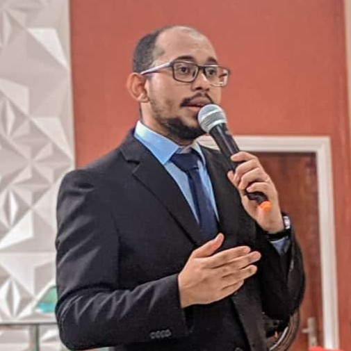
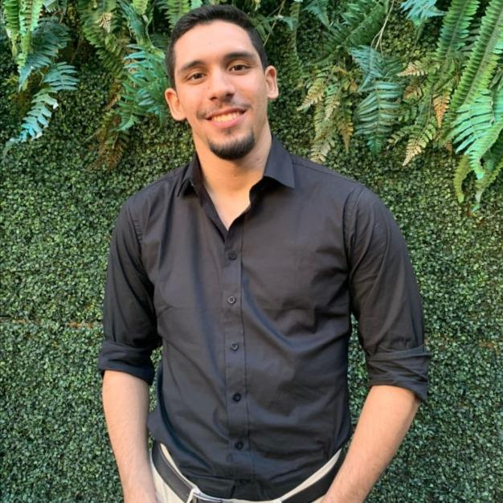
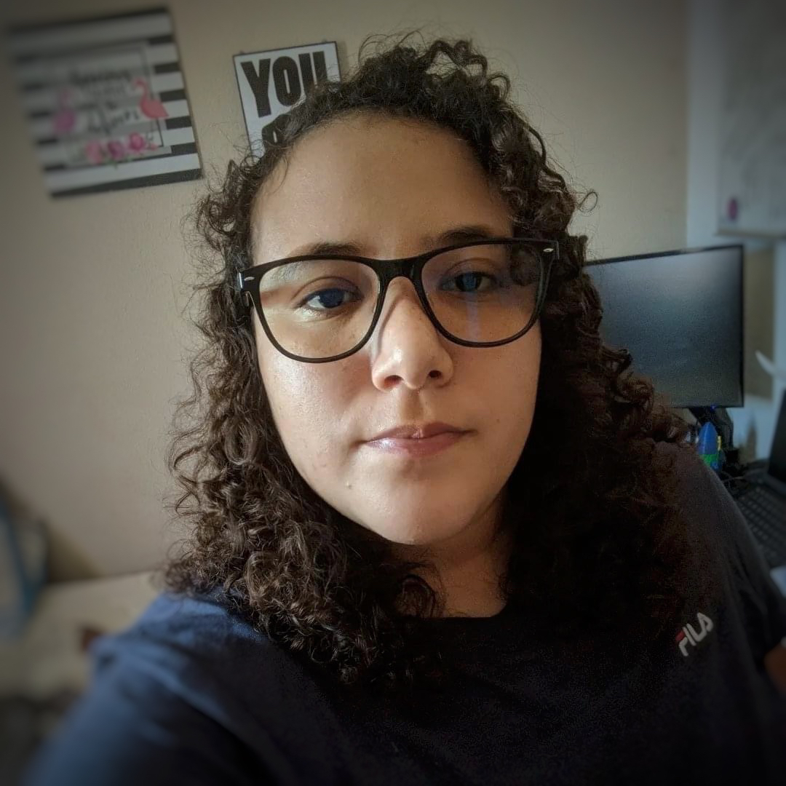
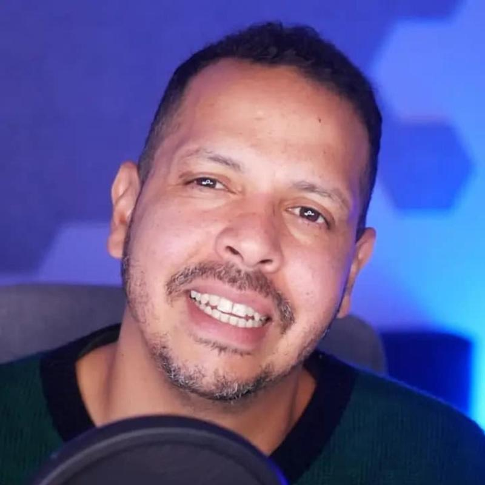
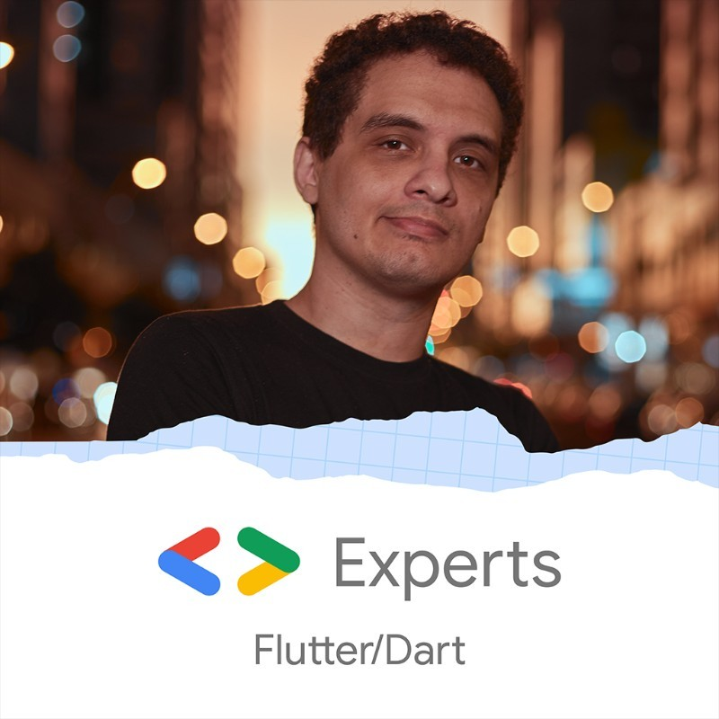
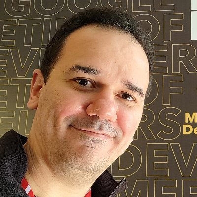

As pessoas palestrantes do Devfest possuem uma variedade de experiências, que vão desde pessoas desenvolvedoras experientes à lideres de comunidades. As pessoas que palestram com frenquência se engajam em conversas técnicas em suas empresas, cidades e países. No Devfest você pode esperar palestras de Google Developer Experts, Tech Leads, pessoas desenvolvedoras e resolvedores de problemas.

Allef Gomes de Almeida
Tecnologias web
Sou graduado em Sistemas para Internet, atualmente estou finalizando minha pós graduação em MBA em Engenharia de Software Ágil, trabalho a 5 anos com desenvolvimento de softwares, atualmente tenho estudado sobre arquitetura e desenvolvimento ágil.
Antonio Pedro Ferreira
Carreira e Desenvolvimento Pessoal
Profissional com ampla experiência em TI, iniciando sua carreira em 2004. Atualmente é Tech Manager no Picpay e fundador do Instituto Itinerante de Tecnologia, nos últimos anos tem se especializado em construir times de alta performance, ajudando startups e empresas a tirar suas ideias do papel.
Bianca Ximenes
Machine Learning
Bianca foi nomeada pelo Google Developers em 2021 como uma de 21 mulheres ao redor do mundo que estão abrindo novos caminhos de relevância na tecnologia. Ela é Head de Inteligência Artificial na Gupy e Google Developer Expert em Machine Learning. Seu trabalho impacta milhões de pessoas.

Carlos Vitor da Silva Mesquita
Carreira e Desenvolvimento Pessoal
Olá, eu sou Carlos Mesquita e junto de mais 4 amigos, estou jornada do empreendedorismo com a startup This.envolve e lançando nosso primeiro produto digital, ainda como universitários, o Weekend. Busco mostrar o poder inovação e negócios ainda dentro da universidade, de estudante para estudante.

Débora Ruth da Silva Valentim
Infra / DevOps / SRE
Estudante de Engenharia de Software pela UFC, tenho alguns artigos publicados na área de Computação Forense e Big Data com Inteligência Artificial. fui Analista de Segurança da Informação da Toro Investimento empresa do Santander e hoje sou Analista de Segurança da Informação da Gupy e certificações

Fellyph Cintra
Tecnologias web
Fellyph Cintra é um desenvolvedor Front-end apaixonado por desempenho web, acessibilidade e SEO. Sempre esteve envolvido no apoio às comunidades de desenvolvedores locais, pois acredita que as comunidades são ferramentas de integração e desenvolvimento social.
Italo Marcel S. Santana
Mobile
Um gamer nato e apaixonado por Android, formado em Programação de Sistemas pelo Instituto Federal de Sergipe e graduando em Ciência da Computação pela Universidade Federal de Sergipe. Programa desde os 15 anos de idade, e já desenvolveu diversos aplicativos durante os mais de 10 anos como Developer.

Jacob Moura
Flutter
co-CEO na F-Team | Flutterando founder | Google Developer Expert em Flutter.
Moises Barbosa dos Santos
Qualidade de Código
Oi! Sou o Moises, atualmente atuo como Dev FrontEnd, mas tenho conhecimento sobre o BackEnd também por ter uma base sólida com Java, estudo sobre a área de Desenvolvimento e mais especificamente Desenvolvimento Web a quase dois anos e estou atuando como Estagiário na IBM.

Nelson Glauber
Mobile
Nelson Glauber é mestre em engenharia de software com mais de 20 anos de experiência na área. Começou a trabalhar com Android em 2008 e em 2014 foi nomeado como primeiro Google Developer Expert de Android da América Latina. É autor do livro "Dominando o Android" e Senior Android Developer na Nagarro.
Silvia Coelho
Carreira e Desenvolvimento Pessoal
Silvia Coelho, paraense, mãe de 2, é Mestra e Graduada em Engenharia Elétrica. Em 2017, criou a Elas Programam para incentivar mais mulheres a seguirem carreira em tecnologia. Silvia é LinkedIn Top Voices & Creator, palestrante, com mais de 100 mil seguidores em diversos canais digitais.
Wilson Mendes Neto
Carreira e Desenvolvimento Pessoal
Google Developer Expert (GDE) em Angular e Tecnologias Web e Microsoft Most Valuable Professional (MVP) em Developer technologies, autor do livro Nodebots - Javascript e robótica no mundo real e contribuidor em projetos Open Source